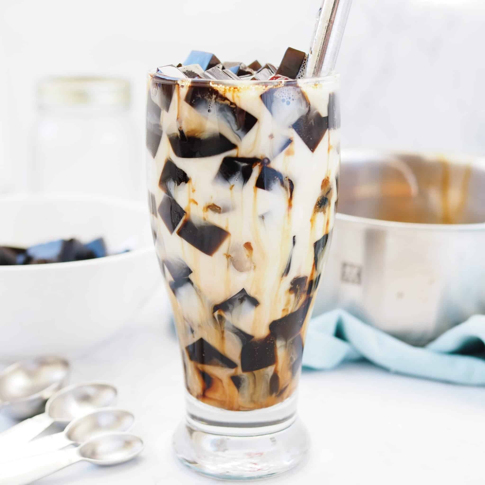

Food is life, and dessert is the king of all food. So, it is reasonable to say that dessert is the king of life. :) There are many types of desserts from all over the world, but I shall mostly be talking about East Asian desserts, my favorite.
Not only will I be introducing the desserts, tutorials will also be available.
The three main types of desserts introduced will be Taiwanese and Japanese.
1. Boba Milk Tea
Perhaps the most famous Taiwanese dessert globally. It first originated from Taiwan and is now a favorite of many people around the world. Mostly made up of milk, tea, sweetener of choice, and tapioca pearls.
2. Grass Jelly
It is a type of jelly extracted from a plant of the mint family. It is commonly used in dessert soups with other items such as boba, taro balls, and red bean. It is also a popular topping for milk tea.
Grass Jelly Milk Drink | Image from Christie At Home
3. Douhua (Tofu Pudding)
The mainland China's version of Douhua is salty and eaten as breakfast, while the Tawainese Douhua is sweet and eaten as dessert. It is usually topped with sugar syrup and peanuts.
1. Mochi
Mochi is basically Japanese rice cake. It is made from glutinous rice flour or mochigome and has a sweet filling in the middle. Two of the most popular flavors of mochi are green tea and red bean.
2. Purin (Japanese Custard Pudding)
Purin is a silky, creaming pudding with a nice layer of caramel on the top.

Japanese Custard Pudding | Image from Just One Cookbook